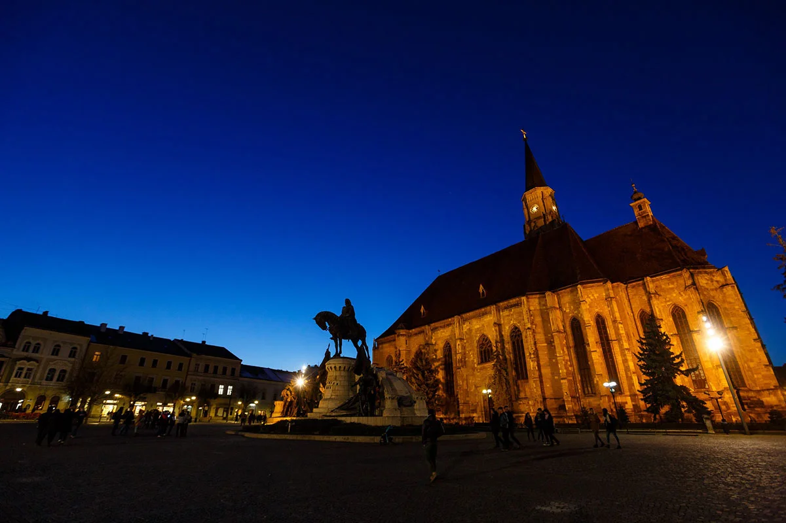

🔦 De ce noi?
Ne diferențiem prin metode verificate, echipamente moderne și rapoarte detaliate care pot fi folosite legal.
Evaluare și plan de acțiune adaptat fiecărui caz.
Detectiv particular · Cluj-Napoca
Investigații private rapide și discrete pentru companii și familii din Cluj-Napoca.
Certum Consult operează din inima Transilvaniei, protejând clienți din România și din străinătate. Echipa noastră multidisciplinară îmbină filajul în teren, inteligența digitală și expertiza juridică pentru a livra rezultate decisive.
Ne diferențiem prin metode verificate, echipamente moderne și rapoarte detaliate care pot fi folosite legal.
Evaluare și plan de acțiune adaptat fiecărui caz.
Confidențialitate.
Integritate.
Profesionalism.
Ne ghidăm activitatea după principii clare: confidențialitate absolută, proceduri legale și respect pentru clienți. Adevărul îți este livrat cu responsabilitate.
Confidențialitatea este fundamentul muncii noastre. Relația cu fiecare client se bazează pe discreție și siguranță.
Tu deții controlul asupra informației.
Respectăm legea, etica profesională și limitele morale. Adevărul are valoare doar când este obținut corect.
Investigații 100% legale.

Cluj-NapocaPortofoliul nostru cuprinde corporații, case de avocatură și clienți privați din Cluj-Napoca
"Certum Consult a gestionat o breșă corporativă sensibilă cu o discreție impecabilă. Rapoartele lor au fost precise, solide din punct de vedere legal și livrate înainte de termen."
"Echipa lor din Cluj a descoperit urme digitale care au devenit probe esențiale. Îi recomandăm fără ezitare partenerilor noștri regionali."
"De la primul briefing până la raportul final, profesionalismul a fost impecabil. Certum Consult ne-a protejat familia cu tact și respect."
"Discreția lor m-a surprins plăcut. Totul s-a desfășurat fără expunere, cu profesionalism și empatie. Am primit un raport clar și complet, care mi-a oferit liniștea de care aveam nevoie."
"Servicii impecabile. Colaborăm periodic pentru verificări interne și due diligence. Echipa este serioasă, eficientă și oferă rapoarte documentate, ușor de integrat în procesul decizional."
"A fost o situație delicată, dar totul a fost gestionat cu respect și discreție totală. Mi-au oferit răspunsurile de care aveam nevoie, fără presiune sau expunere inutilă."
Răspunsuri rapide la cele mai des întâlnite întrebări despre modul în care operăm și cum păstrăm confidențialitatea clienților noștri.
Acoperim investigații corporate, verificări de integritate, filaj în teren și analiză digitală. Pentru fiecare solicitare construim un plan dedicat, validat juridic înainte de implementare.
Programăm o discuție confidențială pentru a evalua situația, stabilim obiectivele și semnăm acordurile de protecție a datelor. Abia apoi alocăm echipa multidisciplinară potrivită cazului.
Lucrăm cu protocoale criptate, partajăm informații doar cu personal autorizat și folosim infrastructură segregată. Toți operativii semnează clauze stricte de confidențialitate și sunt auditați periodic.
Majoritatea cazurilor au un raport preliminar în 7 zile lucrătoare, însă situațiile critice beneficiază de actualizări zilnice. Termenele exacte sunt comunicate în mandatul inițial.
Orice documentație legală, cronologie a evenimentelor, date de contact și materiale suport. Cu cât informațiile sunt mai clare, cu atât putem acționa mai rapid și mai eficient.